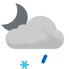

Weather
Germersheim 2.7-5.8
2.7-5.8

2.3-5.7 Tue

6.1-9.6 Wed

6.9-9.8 Thu

6.1-8.5 Fri

0.2-5.6 Sat

2.4-6.9 Sun

8.0-9.7 Mon

8.1-10.8 Tue

6.3-8.1 Wed
Erlabrunn -2.9-0.8
-2.9-0.8

-2.9-2.0 Tue

-0.4-1.7 Wed

-0.3-2.7 Thu

1.6-3.0 Fri

-1.9--0.2 Sat

-0.7-2.6 Sun

1.8-3.9 Mon

0.3-4.8 Tue

-0.4-3.7 Wed
Schmilka -0.5-2.1
-0.5-2.1

-0.5-5.1 Tue

2.4-4.5 Wed

1.7-4.6 Thu

3.8-7.5 Fri

1.3-4.9 Sat

2.9-5.9 Sun

3.5-6.6 Mon

2.3-8.1 Tue

3.3-7.0 Wed